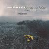

Celtic Lyrics Corner > Artists & Groups > Mouth Music > Seafaring Man > Milleadh Nam Braithrean
|  | Milleadh Nam Braithrean |
| Credits : | Traditional; arranged by Martin Swan |
| Appears On : | Seafaring Man |
| Language : | GÃ idhlig (Scottish Gaelic) |
| Other Versions : | " Milleadh Nam Braidhrean " on Capercaillie's album Cascade |
| Lyrics : | English Translation : |
| I ri dhiu o ro hu o | I ri dhiu o ro hu o |
| I ri dhiu o ro eile | I ri dhiu o ro eile |
| I ri dhiu o ro leannain | I ri dhiu o ro darling |
| Se bu mhath leam bhith reidh riut | What I would like is to be at peace with you |
| Bha am brathair a b'fhaisg ort | The brother nearest to you |
| Dha do choimhead 's tu nad eiginn | Was watching you in your agony |
| 'S ann a direadh na bruthaich | It was going up the brae |
| 'S ann a rug iad air m'eudail | That they caught up with my darling |
| 'Sann a' direadh na bruthaich | It was going up the brae |
| 'Sann a rug iad air m'eudail | That they caught up with my darling |
| 'Sann a direadh a' gharraidh | It was when climbing the garden wall |
| Leig mo ghradh a cheud eibhe | That my love gave the first cry |
| 'Sann a direadh a' gharraidh | It was when climbing the garden wall |
| Leig mo ghradh a cheud eibhe | That my love gave the first cry |
| Thuirt am brathair bu shine | The oldest brother said |
| "Leig na sginean gu cheile" | "Engage the knives" |
| Thuirt am brathair bu shine | The oldest brother said |
| "Leig na sginean gu cheile" | "Engage the knives" |
| Thuirt am brathair a b'oige | The youngest brother said |
| "Chan i choir, ach 's i'n eucoir" | "This is not justice, it's injustice" |
| Tha mo mhollachd aig mo phiuthair | My curses on my sister |
| Gruagach bhuidh' an fhuilt ghie-ghil | Golden girl of the white fair hair |
| 'S i a dh'innis do m'bhraithrean | For it was she who told my brothers |
| Thu bhith air Airigh a'Cheitinn | Of your being at Airigh a'Cheitinn |
| I ri dhiu o ro hu o | I ri dhiu o ro hu o |
| I ri dhiu o ro eile | I ri dhiu o ro eile |
| I ri dhiu o ro leannain | I ri dhiu o ro darling |
| Se bu mhath leam bhith reidh riut | What I would like is to be at peace with you |